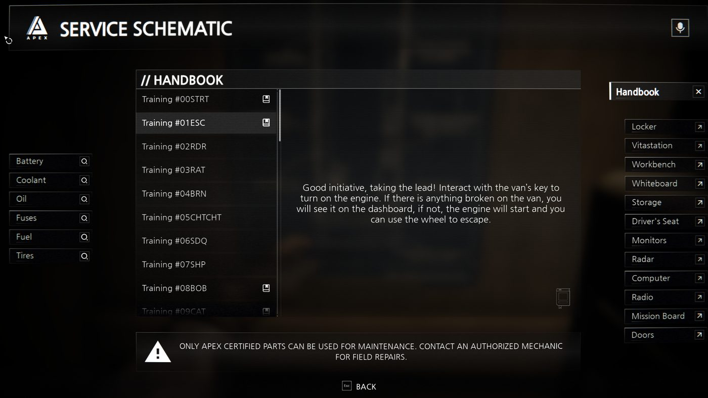
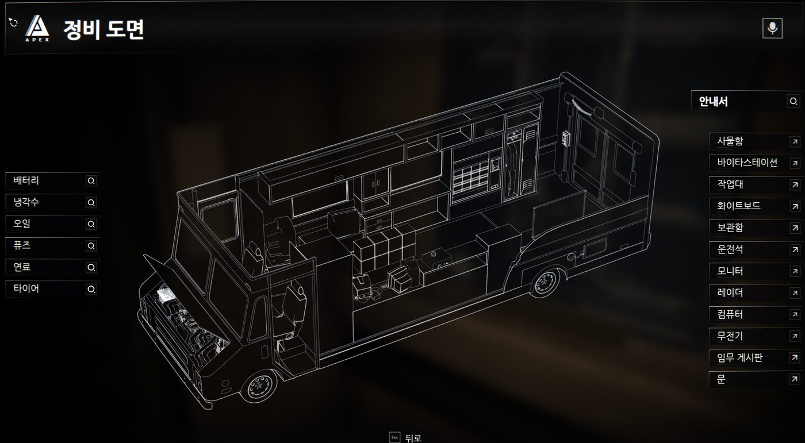

Funnel Runners 한글패치
언어 설정 자체가 없는 게임에 한국어를 넣습니다. 퀘스트와 안내문을 읽으면서 할 수 있습니다.
문구 2,935개
v3.0
게임 v0.36.12 전용
멀티 지장 없음
🖼️이렇게 바뀝니다
적용 전

적용 후

메뉴·안내서·정비 항목이 전부 한글로 바뀝니다.
퀘스트 안내문과 회사 컴퓨터의 문서까지 포함해 문구 2,935개를 번역했습니다.
📦설치
- 게임과 스팀을 완전히 종료합니다. (중요)
- 압축을 풉니다. 압축 안에서 바로 실행하면 안 됩니다.
설치.bat 을 더블클릭합니다.- 게임을 못 찾으면 경로를 물어봅니다. 아래를 참고해 붙여넣으세요.
게임 폴더 찾기
스팀 → 라이브러리 → Funnel Runners 우클릭 → 관리 → 로컬 파일 보기
→ StormEscape → Content → Paks 로 들어가서 주소창 경로를 복사
↩️제거
게임과 스팀을 끄고 제거.bat 을 실행하면 원래대로 돌아갑니다.
2.6GB를 다시 받을 필요 없이 몇 초면 끝납니다.
🔄게임이 업데이트되면
스팀이 패치된 파일을 원본으로 덮어써서 패치가 지워지고 영어로 돌아갑니다.
게임 자체는 멀쩡합니다. 새 버전 패치를 받아 다시 설치하면 됩니다.
이 패치는 만들어질 당시의 게임 버전에만 맞습니다. 버전이 다르면
설치.bat 이 스스로 확인하고 멈추므로 게임이 깨질 일은 없습니다.
❓문제가 생기면
글자가 네모나 ◆ 로 깨져요
폰트가 안 들어간 것입니다. 게임을 끄고 제거 → 설치를 다시 하세요.
게임이 안 켜져요
제거.bat 을 실행하세요. 그래도 안 되면 스팀 →
속성 → 설치된 파일 → 게임 파일 무결성 확인.
설치가 실패해요
게임이나 스팀이 켜져 있는 경우가 대부분입니다. 완전히 끄고,
그래도 안 되면 설치.bat 을 관리자 권한으로 실행하세요.
같이 하는 사람도 한글로 보이나요?
아니요. 내 화면에만 적용되고 상대 화면은 영어 그대로입니다.
멀티에 지장 없습니다.
📝참고
- 메뉴·설정·정비 안내·아이템·튜토리얼·임무·업적, 회사 컴퓨터의 문서까지 번역했습니다.
- 사람 이름, 상표(APEX 등), 제3자 라이선스 고지는 일부러 영어로 뒀습니다.
- 게임 폰트에 한글 글리프가 없어 나눔고딕(오픈 라이선스)으로 함께 교체합니다.
공식 패치가 아닙니다. 게임 파일을 직접 고치는 방식이라, 쓰실지는 각자 판단하시면 됩니다.
원본은 제거.bat 으로 언제든 되돌릴 수 있습니다.